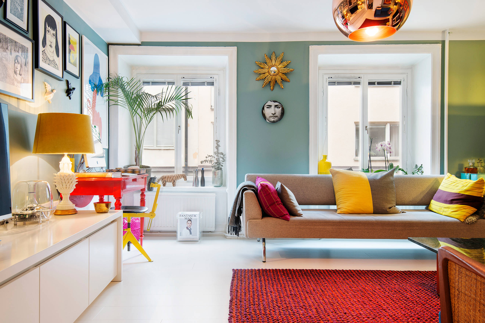
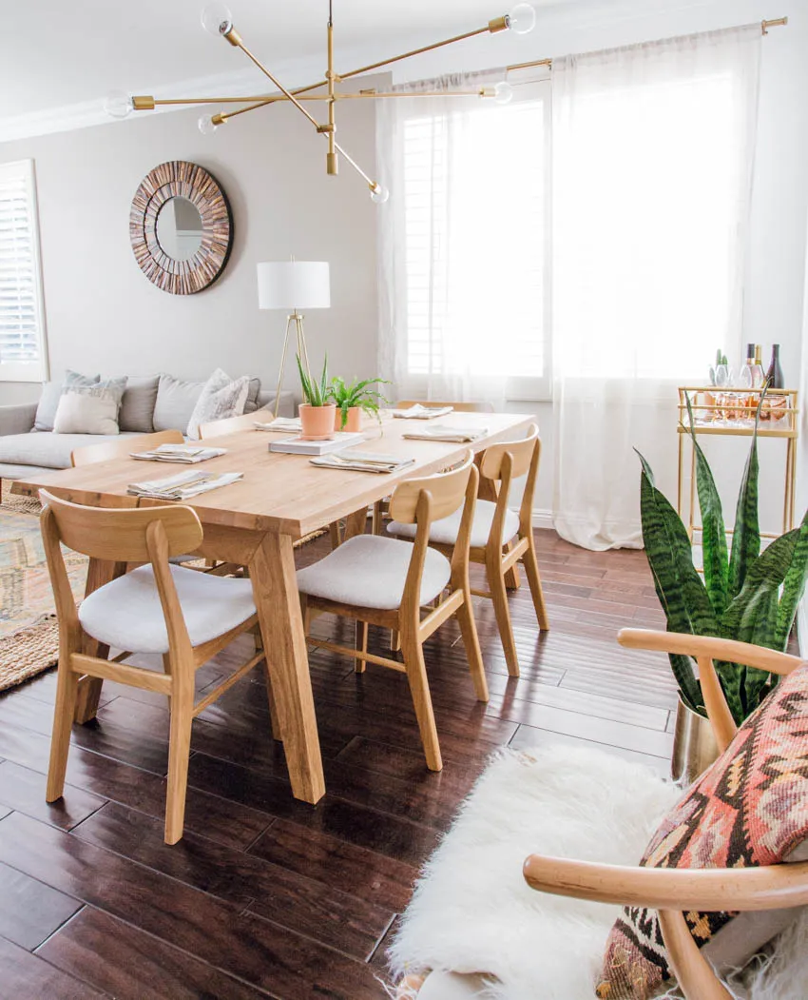

What is Scandinvian Simplicity Style?
Scandinavian design focuses on minimalism, functionality, and comfort. It emphasizes light, clean spaces with a soft, calming palette and simple décor. The style blends modern design with natural elements to create cozy and practical interiors.
Common Elements
- Light wood tones and white walls
- Functional furniture with clean lines
- Soft textures and layered lighting
- Minimal but warm decor elements
Gallery
 Budget-Friendly Tips
Use natural light and white or pastel paint. Choose multifunctional furniture. Add coziness through throw blankets, plants, and soft textures. Keep clutter to a minimum.